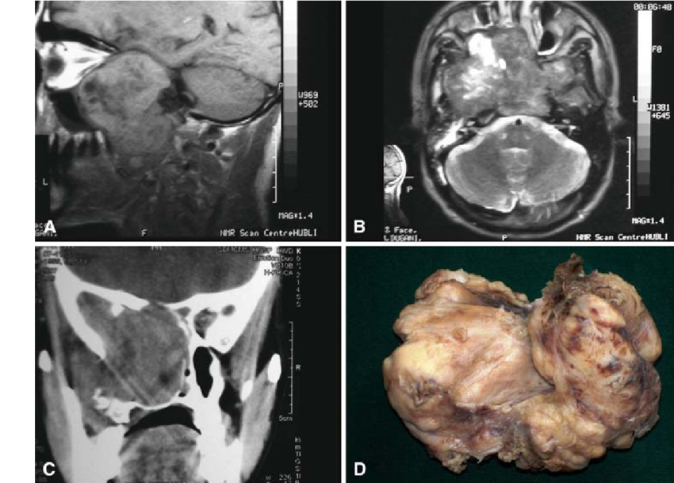
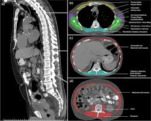
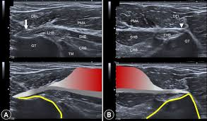
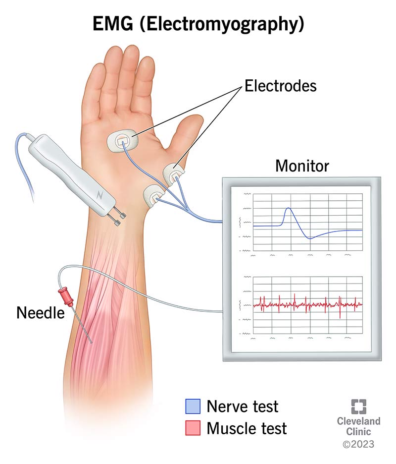

Diagnostic Imaging Techniques
Visualizing muscles and related structures is key to diagnosing injuries and diseases. Different techniques offer unique advantages for specific clinical questions.

MRI (Magnetic Resonance Imaging)
Uses strong magnetic fields and radio waves to create detailed images based on water content in tissues.
Advantages & Uses:
- Excellent soft tissue contrast (muscles, tendons, ligaments, nerves).
- Detects tears, strains, inflammation, edema, tumors.
- No ionizing radiation.
- Multi-planar imaging.
Limitations:
- Expensive, time-consuming, noisy.
- Contraindicated with certain implants.
- Less detail for bone structure.
- Can induce claustrophobia.

CT (Computed Tomography)
Combines multiple X-ray images taken from different angles to produce cross-sectional views.
Advantages & Uses:
- Excellent bone detail.
- Fast acquisition time.
- Good for complex fractures involving muscle attachments.
- Detects calcifications, large hematomas, abscesses.
- Useful for biopsy guidance.
Limitations:
- Uses ionizing radiation.
- Less soft tissue detail compared to MRI.

Ultrasound (Sonography)
Uses high-frequency sound waves to create real-time images (echos reflecting off tissues).
Advantages & Uses:
- Real-time imaging, allows dynamic assessment (movement).
- Excellent for superficial structures.
- No ionizing radiation, portable, relatively inexpensive.
- Detects tears, tendinopathy, fluid collections.
- Effective for guiding injections and aspirations.
Limitations:
- Operator-dependent skill level.
- Limited penetration for deep structures.
- Bone blocks sound waves.

EMG / NCS
Functional tests, not anatomical imaging. EMG measures electrical activity within muscles; NCS measures nerve conduction velocity.
Advantages & Uses:
- Assesses nerve and muscle health/function.
- Differentiates nerve vs. muscle disorders.
- Diagnoses neuropathies, myopathies, radiculopathies, neuromuscular junction disorders.
Limitations:
- Can be uncomfortable (especially needle EMG).
- Provides functional data, not detailed anatomy.
- Interpretation requires expertise.